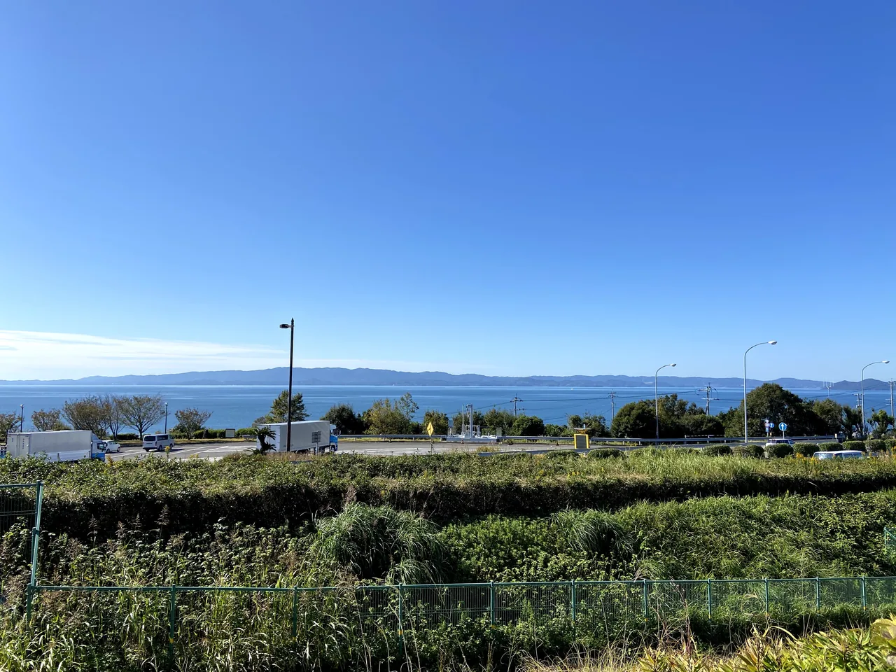

— 宗像市
玄海ゴルフクラブ
Genkai Golf Club ｜ 18H・Par 72・7,011Y ｜ 1963年開場・2023年リニューアルの名門
✈️ 空港から約60分
⛳ 18H・Par 72・7,011Y
🏆 2026 日本シニアオープン
🏆 2029 日本オープン開催
🏆 営業中・全国オープン開催コース
2023年10月リニューアル後、2029年日本オープンの会場として営業中。予約はメンバー本人からの完全予約制（公式）で、ゲストは公式サイトのゲスト申込書をメールかFAXで提出します。じゃらんゴルフ・楽天GORAでは予約できません（GDOゴルフ場予約にはコースのページがあります）。お問い合わせは 0940-62-2233。
⚠️ 2027年1月5〜8日と1月12日〜3月6日は、コース改修のためクローズします（公式）。
🏆
2026年9月17-20日 日本シニアオープン／2029年 日本オープン開催決定
2023年10月リニューアルグランドオープン・横山良監修。九州を代表する全国オープン会場。
⛳ 宗像・福岡市近郊で「今すぐ予約できる」人気コース
玄海ゴルフクラブはメンバー本人からの完全予約制です。今すぐ予約できるなら、まずは福岡国際CCがおすすめ。以下の楽天GORAボタンは各コース（福岡国際CC・NEWユーアイGC・久山CC）の予約ページに移動します。
福岡国際カントリークラブ ◎ 宗像・近郊で予約可
36ホールの本格コース／宗像
— Green Fees
名門の料金体系
玄海GCはビジター料金が季節により変動。下記は公式の料金表（2026年11月9日確認・税込）のゲスト料金。10〜12月が最も高く、1・2・8月が最も安い区分です。予約はメンバー本人からの完全予約制です。
¥13,900〜17,900
平日 ¥13,900〜¥17,900／土日祝 ¥22,900〜¥24,900（季節で変わります）。
VISITOR / キャディ付
ビジター キャディ付
¥17,900〜21,900
平日 ¥17,900〜¥21,900／土日祝 ¥26,900〜¥28,900（季節で変わります）。
¥8,575〜¥11,395
セルフ ¥8,575／キャディ付 ¥11,395（全日・公式）。
⚠️ ビジター予約条件: 玄海GCの予約はメンバー本人からの完全予約制です。ゲストは公式サイトのゲスト申込書をダウンロードし、メールかFAXで提出します。じゃらんゴルフ・楽天GORAでは予約できません。キャンセルは3日前の正午まで（以降は1人 ¥2,000）。詳しい予約条件は
公式サイト →をご確認ください。
💡 補足: 2023年10月2日、横山良監修によるリニューアルグランドオープン。九州最大級250Y20打席ドライビングレンジを併設。コースレート Champion 74.7 / Back 73.7 / Regular 71.5。グリーンはベント1グリーン(007/777混合)。
— The Course
玄海ゴルフクラブ
の魅力。
1963年10月26日開場、関西プロゴルフ協会(原)設計。2023年に横山良監修で大規模リニューアルされ、Par 72・7,011Yの戦略性高い丘陵コースに生まれ変わりました。玄界灘近郊の自然を活かしたレイアウトで、2026年9月の日本シニアオープン、2029年の日本オープンの開催地に決定しています。
- ✓
九州を代表する全国オープン会場2026年日本シニアオープン・2029年日本オープン開催決定。
- ✓
2023年リニューアル後Par 72・7,011Y007/777混合ベント1グリーン。Champion 74.7・Back 73.7・Regular 71.5の本格レート。
- ✓
九州最大級ドライビングレンジ250Y20打席を新設。プレー前に十分なウォームアップが可能。
- ✓
名門ならではの伝統と格式入退場ブレザー必須(6-9月のみ任意)・襟付シャツ・帽子必須のドレスコード。
— Voices on Threads
口コミ・評判（Threadsの声）
Threadsの公開投稿とコメント8件（2024年7月〜2026年7月）を編集部が要約しました。個人の感想で、時期や条件によって変わります。
よく挙がる良い点
- コースがきれいで整備が良い3件
- 食事の評判。鯛茶漬け、鳥の半身2件
- 練習場が広い1件
- 7番ホール手前の茶店から沖ノ島が見えた報告1件
行く前に知っておきたい点
- バンカーに何度も入る。砂がふかふかで難しい4件
- アップダウンがあり、数字以上に長く感じる1件
編集部のまとめ：機会があれば挑戦したい名門です。バンカーの練習をしてから行くと安心です。
投稿はInstagramの公式埋め込みで紹介しています。表示されない場合は、元の投稿が削除されたか非公開になった可能性があります。掲載の取り下げは運営者のThreadsへご連絡ください（プライバシーポリシー）。
— Getting Here
アクセス
福岡空港から車で約1時間。公共交通の場合は、地下鉄→博多駅→JR鹿児島本線で東郷駅(約30分)、東郷駅からタクシー約15分。
✈️
From Fukuoka Airport
車で約60分
🚄
From Hakata Station
JR約30分→東郷+タクシー15分
🛣️
Nearest IC
古賀IC・若宮IC（公式）
— Play Styles
プレースタイル
🏆
トーナメント仕様で18H
日本シニアオープン・日本オープン開催のチャンピオンコースで本格18ホール。Champion 7,011Y・コースレート74.7。
⛳
乗用カート(GPSナビ付)
2023年リニューアル後の最新乗用カートを採用。GPSナビで残り距離も明確に把握できます。
— Book Your Tee Time
空き状況を確認。
予約はメンバー本人からの完全予約制。ゲストは公式サイトのゲスト申込書（メール・FAX）で申し込みます。
⚠️ 玄海GCは「メンバー本人完全予約制」のため、確実な予約には
公式サイトでの問い合わせまたは会員紹介をご検討ください。
— FAQ
よくある質問
Q. 玄海ゴルフクラブの料金は？
公式の料金表（2026年11月確認・税込）では、ゲストのセルフは平日 ¥13,900〜¥17,900・土日祝 ¥22,900〜¥24,900、キャディ付きは平日 ¥17,900〜¥21,900・土日祝 ¥26,900〜¥28,900です。10〜12月が最も高く、1・2・8月が最も安い区分です。2人での利用は割増があります。
Q. ビジターでも予約できる？
公式サイトでは、予約はメンバー本人からの完全予約制とされています。ゲストは公式サイトのゲスト申込書をダウンロードし、メールかFAXで提出します。じゃらんゴルフ・楽天GORAでは予約できません。GDOゴルフ場予約にはコースのページがあります。
Q. ドレスコードは？
入退場時はブレザーなどの上着が必要です（6〜9月を除く）。Tシャツ・半ズボン・ブルージーンズ、サンダルでの来場はできません。プレー中は帽子かサンバイザーをかぶり、襟付きで袖のあるシャツを着てください（ハイネックは可）。ハーフパンツの場合はくるぶしが隠れるソックスが必要です（公式）。
Q. アクセスは？
車なら九州自動車道の古賀ICか若宮IC、または都市高速の香椎東ランプから。電車なら JR博多駅から東郷駅まで約30分、東郷駅からタクシーで約15分です。福岡空港からタクシーで約1時間（いずれも公式）。
Q. 休みの日やクローズ期間は？
休場日は月曜日です。2029年日本オープンに向けたコース改修のため、2027年1月5〜8日と1月12日〜3月6日はクローズすると公式サイトで告知されています。
⚠️
International visitors: Major Japanese booking sites (Jalan, Rakuten GORA) typically require a Japanese phone number and credit card. For English support, please use each course's official website link or contact the course directly. See our step-by-step booking guide for foreigners (English & Korean).
— Munakata City
Genkai Golf Club
玄海ゴルフクラブ ｜ 18H・Par 72・7,011Y ｜ Opened 1963 / Renovated 2023
✈️ ~60 min from airport
⛳ 18H · Par 72 · 7,011Y
🏆 2026 Japan Senior Open
🏆 2029 Japan Open host
🏆 Operating · Hosting National Open Championships
Renewed in October 2023 and the venue for the 2029 Japan Open. Bookings are made by members themselves only (official); guests submit the club's guest application form by email or fax. Not bookable on Jalan Golf or Rakuten GORA (GDO has a course page). Phone 0940-62-2233.
⚠️ Closed for course work 5–8 Jan and 12 Jan–6 Mar 2027 (official).
⚠️ Member-only reservation system (introduction recommended)
¥13,900〜
Visitor self lowest
🏆Prestige
National open host
🏆
Hosting 2026 Japan Senior Open (Sep 17-20) and 2029 Japan Open
Renovated and grand-reopened October 2023 under Yoshi Yokoyama's supervision. One of Kyushu's flagship national tournament venues.
— Green Fees
Premier-club Pricing
Genkai GC visitor fees vary by season. Below are the guest rates from the official fee table (checked 9 Nov 2026, incl. tax). Oct–Dec is the most expensive season and Jan, Feb and Aug the cheapest. Bookings are made by members themselves only.
VISITOR / SELF
Visitor self-play
¥13,900〜17,900
Weekday ¥13,900〜¥17,900 / weekend & holiday ¥22,900〜¥24,900 (varies by season).
VISITOR / WITH CADDIE
Visitor with caddie
¥17,900〜21,900
Weekday ¥17,900〜¥21,900 / weekend & holiday ¥26,900〜¥28,900 (varies by season).
MEMBER / All days
Member rate (reference)
¥8,575〜¥11,395
Self ¥8,575 / with caddie ¥11,395 (all days, official).
⚠️ Visitor reservation conditions: Bookings at Genkai GC are made by members themselves only. Guests download the club's guest application form and submit it by email or fax. Not bookable on Jalan Golf or Rakuten GORA. Cancel by noon three days before (¥2,000 per person after that). For details, see the
official site →.
💡 Note: Renovated and grand-reopened October 2, 2023 under Yoshi Yokoyama's supervision. Includes one of Kyushu's largest driving ranges (250Y, 20 bays). Course rating: Champion 74.7 / Back 73.7 / Regular 71.5. One bent grass green (007/777 mix).
— The Course
Why golfers love
this course.
Originally opened October 26, 1963 (designed by Kansai Pro Golf Association — Hara). Underwent major renovation in 2023 under Yoshi Yokoyama's supervision, becoming a strategic Par 72, 7,011-yard hilly course. Set near the Genkai Sea, the layout has been chosen to host the 2026 Japan Senior Open (Sep 17-20) and the 2029 Japan Open.
- ✓
One of Kyushu's flagship national tournament venuesHosting 2026 Japan Senior Open and 2029 Japan Open.
- ✓
Post-renovation Par 72 / 7,011YSingle bent grass green (007/777 mix). Course ratings: Champion 74.7 / Back 73.7 / Regular 71.5.
- ✓
One of Kyushu's largest driving ranges250-yard, 20-bay range added in 2023 — ample warm-up before play.
- ✓
Premier-club tradition and dress codeBlazer required for entry/exit (optional June-September). Collared shirt and cap required.
— Getting Here
Access
About 1 hour from Fukuoka Airport by car. By public transport: subway → Hakata → JR Kagoshima Line to Togo Station (~30 min), then taxi (~15 min) from Togo.
✈️
From Fukuoka Airport
~60 min by car
🚄
From Hakata Station
JR ~30min→Togo+taxi 15min
🛣️
Nearest IC
Koga IC / Wakamiya IC (official)
💡Address: 578-18 Eguchi, Munakata City, Fukuoka 811-3502. Search "玄海ゴルフクラブ" or "Genkai Golf Club" in Google Maps / Naver Maps.
Official access map →
— Play Styles
Two ways to play.
🏆
Tournament-spec 18H
Play the 18-hole championship layout used for the Japan Senior Open and Japan Open. Champion tees 7,011Y / course rating 74.7.
⛳
GPS-equipped riding cart
Latest riding carts post-renovation, with onboard GPS for precise yardage to the green.
— Book Your Tee Time
Check availability now.
Bookings are made by members themselves only. Guests apply with the club's guest form by email or fax.
⚠️ Genkai GC operates a "member-only reservation system." For confirmed bookings, please consider
contacting via the official site or arranging member introduction.
⚠️
해외 이용자 안내: 일본 주요 예약 사이트(자란골프, 라쿠텐 GORA)는 일본 전화번호와 신용카드가 필수입니다. 한국어 지원은 각 코스의 공식 사이트 링크를 이용하시거나 직접 연락 주세요. 외국인용 단계별 예약 가이드를 참고하세요 (영어/한국어 1500단어).
— 무나카타시
겐카이 골프 클럽
Genkai Golf Club ｜ 18홀・Par 72・7,011Y ｜ 1963년 개장・2023년 리뉴얼 명문
✈️ 공항에서 약 60분
⛳ 18홀 · Par 72 · 7,011Y
🏆 2026 일본 시니어 오픈
🏆 2029 일본 오픈 개최
🏆 영업 중 · 전국 오픈 개최 코스
2023년 10월 리뉴얼, 2029년 일본오픈 개최 코스로 영업 중. 예약은 회원 본인만 가능한 완전 예약제 (공식)이며, 게스트는 공식 사이트의 게스트 신청서를 이메일 또는 팩스로 제출합니다. 자란골프·라쿠텐 GORA에서는 예약할 수 없습니다 (GDO에는 코스 페이지가 있음). 문의 0940-62-2233.
⚠️ 2027년 1월 5~8일, 1월 12일~3월 6일은 코스 개수로 휴장 (공식).
✈️
후쿠오카공항에서 차로 약 60분
인천·부산 → 후쿠오카 직항 약 1시간 30분 ｜ 렌터카로 간편하게 이동
🏆
2026년 9월 17-20일 일본 시니어 오픈／2029년 일본 오픈 개최 결정
2023년 10월 리뉴얼 그랜드 오픈・요시 요코야마 감수. 규슈를 대표하는 전국 오픈 회장.
— 그린피
명문 다운 요금 체계
겐카이GC의 비지터 요금은 시즌별 변동. 아래는 공식 요금표 (2026년 11월 9일 확인·세금 포함)의 게스트 요금. 10~12월이 가장 비싸고 1·2·8월이 가장 저렴합니다. 예약은 회원 본인만 가능한 완전 예약제입니다.
¥13,900〜17,900
평일 ¥13,900〜¥17,900／주말·공휴일 ¥22,900〜¥24,900 (시즌별 변동).
VISITOR / 캐디 동반
비지터 캐디 동반
¥17,900〜21,900
평일 ¥17,900〜¥21,900／주말·공휴일 ¥26,900〜¥28,900 (시즌별 변동).
¥8,575〜¥11,395
셀프 ¥8,575／캐디 동반 ¥11,395 (전일·공식).
⚠️ 비지터 예약 조건: 겐카이GC의 예약은 회원 본인만 가능한 완전 예약제입니다. 게스트는 공식 사이트의 게스트 신청서를 내려받아 이메일 또는 팩스로 제출합니다. 자란골프·라쿠텐 GORA에서는 예약할 수 없습니다. 취소는 3일 전 정오까지 (이후 1인 ¥2,000). 자세한 내용은
공식 사이트 →에서 확인해 주세요.
💡 참고: 2023년 10월 2일, 요시 요코야마 감수 리뉴얼 그랜드 오픈. 규슈 최대급 250Y 20타석 드라이빙 레인지 병설. 코스 레이트 Champion 74.7 / Back 73.7 / Regular 71.5. 그린은 벤트 1그린(007/777 혼합).
— 코스 소개
이 코스의
매력.
1963년 10월 26일 개장, 간사이 프로골프협회(原) 설계. 2023년에 요시 요코야마 감수로 대규모 리뉴얼되어 Par 72・7,011Y의 전략적인 구릉 코스로 거듭났습니다. 겐카이나다 인근의 자연을 살린 레이아웃으로, 2026년 9월 일본 시니어 오픈, 2029년 일본 오픈의 개최지로 결정되었습니다.
- ✓
규슈 정상급 전국 오픈 회장2026년 일본 시니어 오픈・2029년 일본 오픈 개최 결정.
- ✓
2023년 리뉴얼 후 Par 72・7,011Y007/777 혼합 벤트 1그린. Champion 74.7・Back 73.7・Regular 71.5의 본격 레이트.
- ✓
규슈 최대급 드라이빙 레인지250Y 20타석 신설. 라운드 전 충분한 워밍업이 가능.
- ✓
명문의 전통과 격식입퇴장 블레이저 필수(6-9월만 임의)・칼라 셔츠・모자 필수의 드레스 코드.
— 오시는 길
액세스
후쿠오카공항에서 차로 약 1시간. 대중교통은 지하철→하카타역→JR 가고시마 본선으로 도고역(약 30분), 도고역에서 택시 약 15분.
🛣️
최근 IC
고가 IC·와카미야 IC (공식)
💡주소: 〒811-3502 후쿠오카현 무나카타시 에구치 578-18. Google Maps・Naver Maps에서 「玄海ゴルフクラブ」로 검색.
공식 액세스 맵 →
— 플레이 스타일
두 가지 플레이 방식.
🏆
토너먼트 사양 18H
일본 시니어 오픈・일본 오픈 개최의 챔피언 코스에서 본격 18홀. Champion 7,011Y・코스 레이트 74.7.
⛳
승용 카트(GPS 내비 부착)
2023년 리뉴얼 후 최신 승용 카트 도입. GPS 내비로 그린까지의 거리도 명확하게 파악할 수 있습니다.
— 티타임 예약
지금 빈자리 확인.
예약은 회원 본인만 가능한 완전 예약제. 게스트는 공식 사이트의 게스트 신청서 (이메일·팩스)로 신청합니다.
⚠️ 겐카이GC는 「회원 본인 완전 예약제」로 운영. 확실한 예약은
공식 사이트 문의 또는 회원 소개를 검토해 주세요.